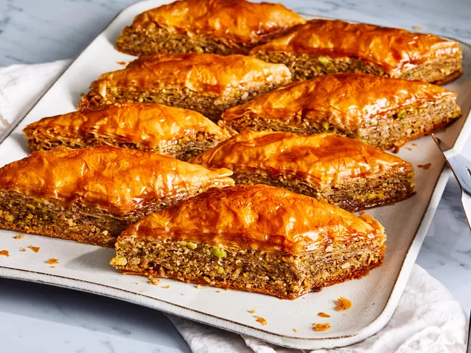

Baklava

Description
Baklava is a traditional pastry known for its sweet, rich flavor and flaky texture. It consists of phyllo (or filo) dough, nuts, spices, and a sugary syrup.
Ingredients:
- Phyllo dough
- Nuts
- Butter
- Cinnamon
- Water
- Sugar
- Vanilla
- Honey
Directions:
- Stack eight sheets of phyllo dough, brushing with melted butter between each layer, to create a sturdy base.
- Sprinkle it with a mixture of chopped nuts and cinnamon. Top with two sheets of phyllo dough and follow with the nut mixture.
- Repeat this process a few more times, until the nut mixture is gone. Top with about eight more layers of phyllo, buttering each layer.
- Cut the baklava into diamond or square shapes. Be sure to cut all the way to the bottom of the pan. Bake until golden and crisp.
- Boil water and sugar until sugar is melted. Add vanilla and honey. Remove the baklava from the oven and immediately pour syrup over it. Let cool before serving.